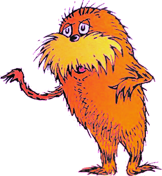

Principles of Unit Testing
Who am I?
- PHP developer since 2003
- Development Team Lead at Digital Bridge Solutions
- Making a difference for B2B companies in the midwest
Who are you?
Two takeaways:
- You will understand WHAT unit testing is.
- You will understand WHEN unit testing is valuable.
Overview
- Definition
- Principles
- Test Doubles
- Solitary vs Sociable
- Test Smells
- Motivations
I. Definition
What is a "unit test"?
"[I]t's a situational thing - the team decides what makes sense to be a unit for the purposes of their understanding of the system and its testing."— Martin Fowler, martinfowler.com
"The software development community simply hasn't managed to settle on well-defined terms around testing."— Martin Fowler, martinfowler.com
A unit test verifies a unit's correctness
against a specification.
A unit is...
- a function (e.g.
t()) - a method on a class (e.g.
function build()) - a script (e.g.
update.php)
...one thing
Think of it as a single frame in a call stack...

Example
A Unit
function increment($a) {
return $a + 1;
}
use PHPUnit\Framework\TestCase;
class IncrementTest extends TestCase {
public function testIncrementAddsOne() {
$result = increment(1);
$this->assertEquals(2, $result);
}
}
Consider levels of testing
- Solitary Unit Testing (e.g. UnitTestCase)
- Sociable Unit Testing (e.g. KernelTestBase)
- Functional Testing (e.g. BrowserTestBase)
Point of confusion: these can all be written in PHPUnit.
This is NOT like a unit test.
 "Man of Faith", photo from Popular Science
"Man of Faith", photo from Popular Science
This is like a unit test.
Steel Beam Test (YouTube)II. Principles
1. Test Doubles
{kind=link}
There are two challenges with testing a unit:
- indirect inputs (shared state)
- indirect outputs (side effects)
... anything that makes it not a pure function.
Example 1
A Unit with an Indirect Input
function get_product($id) {
$product_storage = \Drupal::service('entity.manager')->getStorage('product');
return $product_storage->load($id);
}
public function testGetProductRetrievesId() {
$product_id = 1;
$result = get_product($product_id);
$this->assertEquals($product_id, $result->id());
}
Example 2
A Unit with a Side Effect
function increment_product_favorite_amount(Product $product) {
$product->favorite_count = $product->favorite_amount + 1;
$product->save();
return $product;
}
public function testIncrementProductFavoriteAmountAddsOne() {
$product = new Product();
$product->favorite_count = 1;
$result = increment_product_favorite_amount($product);
$this->assertEquals(2, $result->favorite_count);
}
Test doubles are the tools we use
to test units that have shared state or side effects.
Test Doubles
- Dummy
- never called
- Fake
- is called
- Stub
- provide indirect inputs
- Spy
- provide indirect inputs, capture indirect outputs
- Mock
- provide indirect inputs, verify indirect outputs
Dummy
$token_dummy = $this->getMock('Symfony\Component\Security\Core\Authentication\Token\TokenInterface');
$object_dummy = new \stdClass();
$voter = new Voter();
$this->assertEquals(VoterInterface::ACCESS_GRANTED, $voter->vote($token_dummy, $object_dummy, ['CREATE']));
A dummy is never called, it has no state.
... just use NULL?
Fake
$file_fake = new FakeFile($path);
$response = new BinaryFileResponse($file_fake, 200);
$response->prepare();
$this->assertEquals($path, $response->headers->get('X-Accel-Redirect'));
A concrete class that fakes another concrete class.
Stub
$authorization_checker = $this->getMock('Symfony\Component\Security\Core\Authorization\AuthorizationCheckerInterface');
$authorization_checker->method('isGranted')->willReturn(true);
$controller = new TestController($authorization_checker);
$this->assertTrue($controller->isGranted('foo'));
Like a dummy, but is called and returns values.
Spy
$user_spy = $this->prophesize(User::class);
$profile = new Profile($user_spy->reveal());
$profile->getFullName();
$user_spy->getFirstName()->shouldHaveBeenCalled();
$user_spy->getLastName()->shouldHaveBeenCalled();
Like a stub, but captures calls.
Mock
$user_mock = $this->getMockBuilder('User')->getMock();
$user_mock->expects($this->once())->method('getFirstName')->willReturn('First');
$user_mock->expects($this->once())->method('getLastName')->willReturn('Last');
$profile = new Profile($user_mock);
$profile->getFullName();
Like a spy, but runs assertions on execution of Class Under Test (CUT).
What should you double?
It depends if you're doing
Sociable or Solitary unit testing.
2. Solitary vs Sociable
"Korean War Veterans Memorial Bridge", photo from WikipediaSociable
- Cross some boundaries
- One or more concrete classes during test
vs
Solitary
- Never cross boundaries
- One concrete class during test
Source: Jay Fields, "Working Effectively With Unit Tests"
What is a boundary?
A boundary is "a database, a queue,
another system, or even an ordinary class
if that class is 'outside' the area your trying
to work with or are responsible for"— William E. Caputo, www.williamcaputo.com
What does "one concrete class" mean?
- Use a double for dependencies.
- Collaborators that return objects
should return doubles. - No statics.
- Caveat: value objects don't count.

Recap: Principles of Unit Testing
- A unit test verifies a unit's correctness against a specification.
- Use Test Doubles for indirect inputs or outputs:
- Dummy
- Fake
- Stub
- Spy
- Mock
- A boundary is an indirect input or output.
- Sociable Unit Testing:
- Cross some boundaries
- One or more concrete classes during test
- Solitary Unit Testing:
- Never cross boundaries
- One concrete class during test
IV. Test Smells

"If it stinks, change it."
— Grandma Beck, discussing child-rearing philosophy, "Refactoring"
Examples
- Obscure Test
- What is this test doing!?
- Fragile Test
- I didn't change this class!? How is it now erroring?
- Test Code Duplication
- Why am I repeating myself so much?
- High Test Maintenance Cost
- I spend more time changing tests than code!!!
- Assertion Roulette
- Which assertion failed? I have no idea.
Solutions
- Object Mother
getInactiveUser()- Data Builder
isInactive()->hasPosts(10)->build()- Custom Assertion
assertValidLink($link)- Expect Literals
$this->assertEquals('text', $output);- One assertion per test
- Avoid multiple asserts
- Refactor
- Eliminate side effects and shared state
- Don't unit test
- Unit testing isn't the best strategy in all cases
Try: Arrange-Act-Assert
- Arrange
- Arrange all necessary preconditions and inputs.
- Act
- Act on the object or method under test.
- Assert
- Assert that the expected results have occurred.
Source: Cunningham Ward, c2.com
Try: Arrange-Act-Assert
class IncrementTest extends TestCase {
public function testIncrement() {
// Arrange.
$product = new Product();
$product->favorite_count = 1;
// Act.
$result = increment($product);
// Assert.
$this->assertEquals(2, $result->favorite_count);
}
}
This suggests mocks are obscure and should be avoided!
IV. Motivations
Unit testing provides low level of benefit.
 Photo of wooden bridge in eastern Congo, photo courteousy of Lori Babcock.
Photo of wooden bridge in eastern Congo, photo courteousy of Lori Babcock.
Unit testing provides high level of benefit.
 Photo of two-level bascule bridge in Chicago, IL, photo courteousy of Lori Babcock.
Photo of two-level bascule bridge in Chicago, IL, photo courteousy of Lori Babcock.
When does unit testing have HIGH value?
- Rule of 3 (at least 3 classes will use this)
- Writing a library, e.g. composer dependency
- Before refactoring legacy code
- High amount of necessary complexity
- Exploratory work or to assist development, e.g. TDD
- There is high cost to even minor bugs
- You're writing code in a framework, e.g. Symfony
When does unit testing have LOW value?
- If you're writing "glue" code (e.g. most Drupal projects)
- Maintenance cost is significantly higher than the cost of a bug
- You're writing code in a platform, e.g. Drupal
- There is a more valuable form of testing with lower effort
Solitary or sociable?
See also unit vs kernel tests.
Sociable unit testing...
- hard to debug
- requires lots of set up and tear down
- requires lots of test doubles
Solitary unit testing...
- allows higher code coverage
- promotes decoupling
- executes faster
- enables better software design
"It should not be underestimated how much easier these functions are to test than their state-filled counterparts."— Simon Honeywell, "Functional Programming in PHP"
Solitary unit testing forces
you to write good code.
Unless someone like you
cares a whole awful lot,
nothing is going to
get better, it's not


Ok, but where do I start?
Why is Symfony so successful for re-use?
- It's good object oriented code.
- No surprise: the tests are mostly (entirely?) solitary.
Remember the Principles of Unit Testing:
Thank you!
Slides are available:
github.com/josephdpurcell/principles-of-unit-testing
Let's talk! @josephdpurcell
References
- "UnitTest", Martin Fowler
- "The Indestructible Bridge", Popular Magazine
- "Steel Beam Test", YouTube
- "Okoye Profile Final.JPG", Fandom
- "Okoye Profile Final.JPG", Fandom
- "Black Panther actress imparts inspirational message to Calgary youth", CBC News
- "Working Effectively With Unit Tests", Jay Fields
- "TDD Pattern: Do not cross boundaries", William E. Caputo
- "Refactoring", Martin Fowler
- "Arrange Act Assert", Cunningham Ward
- "Functional Programming in PHP", Simon Honeywell
- Drupal 8.5 code metrics generated by phpmetrics.org, see results.
Further Reading
- "This Black Panther Stuntwoman Is a Real-Life Warrior", YouTube
- "Clean Code", Robert C. Martin
- "The Principles of OOD", Robert C. Martin
- "Object-Oriented Programming Revisited", Mike Bland
- "Working Effectively with Legacy Code", Michael C. Feathers
- "Goto Fail, Heartbleed, and Unit Testing Culture", Martin Fowler
- "How to Prevent the next Heartbleed", David A. Wheeler
- "Why Most Unit Testing is Waste", James O. Coplien
- "Object Mother", Martin Fowler
- "Test Data Builders: an alternative to the Object Mother pattern", Nat Pryce
- "Mocks Aren't Stubs", Martin Fowler
- "Google testing blog"
- "Don't Mock Concrete Classes", Steve Shogren
- "XUnit Test Patterns", George Mezaros
- "How Is Critical 'Life or Death' Software Tested?", Michael Byrne
- "Pure functions have side-effects", John D. Cook
- "Writing Great Unit Tests: Best and Worst Practices", Steve Sanderson
- "Writing unit tests is reinventing functional programming in non-functional languages", Christian S.